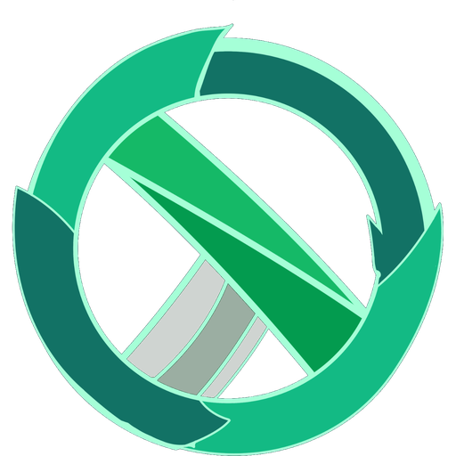

OmniDesk
Atención al cliente con apoyo de IA. Elige cómo quieres entrar.
support_agent
Soy agente o administrador
Inicia sesión para ver y responder conversaciones, clientes y reportes.
Iniciar sesión arrow_forward forumSoy cliente
Escríbenos sin crear cuenta. Un agente te responderá en esta misma página.
Abrir el chat arrow_forward
Comprobando el servidor…